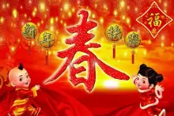
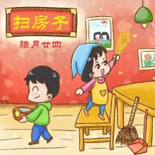

在早期观象授时时代，“斗柄回寅”为春正（岁首），立春乃万物起始、一切更生之义也，意味着新的一岁已开启。“岁”的概念，来自上古历法，“岁”即“摄提”（原始干支），又名为“岁星”、“太岁”。在传承发展中后世将这套多音节的摄提纪元（岁）术语简化为一个字，其与简化后的干支在《尔雅》与《史记》均有对照关系的记载。如：太岁在寅曰摄提格，在卯曰单阏，…在子曰困敦，在丑曰赤奋若（语出《尔雅·释天》）。干支（岁）纪元以北斗星的斗柄指向正东偏北方位的“建寅”之月为起始，然后顺时针方向旋转，循环往复。在传统文化中，干支与方位以及八卦等是联系在一起的，寅位是后天八卦的艮位，是岁终岁首交结的方位，代表终而又始，如《易·说卦传》曰：“艮，东北之卦也，万物之所成终而所成始也。”十二月运行，周而复始，岁末十二月指丑方，正月又复还寅位。斗柄回寅，春回大地，终而复始，万象更新，新岁由此开始。
在传统的农耕社会，立春岁首具有重要的意义，衍生了大量与之相关的岁首节俗文化。虽然此后由于在历史发展中阴阳合历历法制度的推广，节令与节日发生了分离，但许多节令民俗仍旧保留了下来。春节是由岁首祈岁祭祀演变而来，上古时代人们在春回大地、终而复始、万象更新的岁首，举行祭祀活动报祭天地众神、祖先的恩德，驱邪攘灾、祈岁纳福。古代的祭仪情形虽渺茫难晓，但还是可以从后世的节仪中寻找到一些古俗遗迹。如岭南部分地区沿承有在新年初一拜岁以及新年期间隆重盛大的拜神祭祖、驱邪纳福节仪活动，由此可见上古时代岁首祭祀的蛛丝马迹。春节的起源和发展是一个逐渐形成，潜移默化地完善与普及的过程。春节文化作为中华传统文化的重要组成部分，承载着博大精深的中华文化底蕴，也记录着古代人们丰富多彩的社会生活文化内容。
春节是除旧布新的日子，春节虽定在农历正月初一，但春节的活动却并不止于正月初一这天。从年尾小年起，人们便开始“忙年”：祭灶、扫尘、购置年货、贴年红、洗头沐浴、张灯结彩等等，所有这些活动，有一个共同的主题，即“辞旧迎新”。春节是个欢乐祥和、合家团圆的节日，也是人们抒发对幸福和自由向往的狂欢节和永远的精神支柱。过节前，别井离乡的人们都尽可能地回到家里和亲人团聚，共享天伦之乐。除夕，全家欢聚一堂，吃罢“团年饭”，长辈给孩子们派发“压岁钱”，然后“守岁”，迎接新年到来。年节期间，亲朋好友之间相互走访拜年，表达对亲朋好友之间的情怀以及对新一年生活的美好祝愿。春节也是敦亲祀祖、祭祝祈年的日子。祭祀是一种信仰活动，是人类在远古生存活动而创造出来的期望与天地自然和谐共生的信仰活动。万物本乎天，人本乎祖，人们在春节祭祀上天神灵（祖先），重温先祖们构建的“天人合一”生态世界基础上，缅怀和感受天地神灵（祖先）好生之德的神圣与威严，不忘肩负“天道秩序”赋予今人维护人伦向善的责任与使命，心怀敬畏，方行之高远。正因如此，在热闹非常的春节期间，祭祀节仪才依循祖上规矩，进贡上香，叩拜行礼，庄重肃穆，一丝不苟。一系列依次展开的节日仪式程序，代表着节日文化内涵的逐层展示，让传统节日变得庄重，富有意义。
春节更是民众娱乐狂欢的节日。元日子时交年时刻，鞭炮齐响、烟花满天，辞旧岁、迎新年等各种庆贺新春活动达于高潮。年初一早上各家焚香致礼，敬天地、祭列祖，然后依次给尊长拜年，继而同族亲友互致祝贺。元日以后，各种丰富多彩的娱乐活动竞相开展，为新春佳节增添了浓郁的喜庆气氛。节日的热烈气氛不仅洋溢在各家各户，也充满各地的大街小巷。这期间花灯满城，游人满街，热闹非凡，盛况空前，直要闹到正月十五元宵节过后，春节才算真正结束。因此，集祈年、庆贺、娱乐为一体的盛典春节成了中华民族最隆重的佳节。
春节是中国最重要和最具文化内涵的节日，更是推动产业经济和内需消费的重要内驱力。随着国民经济的快速增长，居民个人可支配收入不断提高，春节消费也由传统的置办年货发展为具有时代特色的贺岁作品、产品工艺、休闲娱乐等节日产品和服务。春节期间，人群、金融、物资、信息、艺术的大规模流动，带动了文化、商业、交通、旅游、电信、金融、餐饮各行各业全面繁荣，形成了独特的“春节经济”。 过年是人们一年消费的集中体现。随着新兴消费观念的不断涌现，春节已不仅仅是传统意义上的“过大年”，更是一个拉动市场经济动力的“快门”，人们开始从传统的节日忙碌转向新的庆贺潮流。“春节经济”为老百姓的生活注入了新的活力与生机。尽管大家不可能等到新年才有新衣穿、才有美食享用，但置办年货、孝敬长辈、关爱晚辈，依然是中华民族亘古不变的节日传统